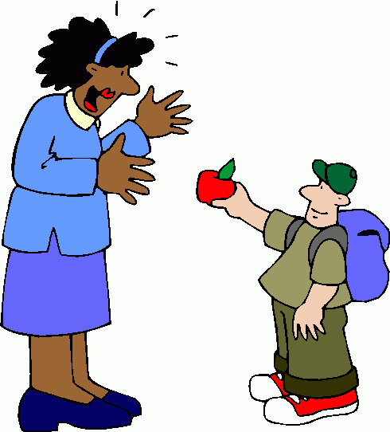
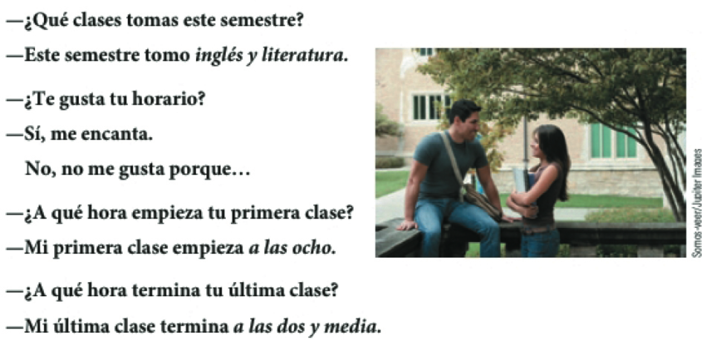
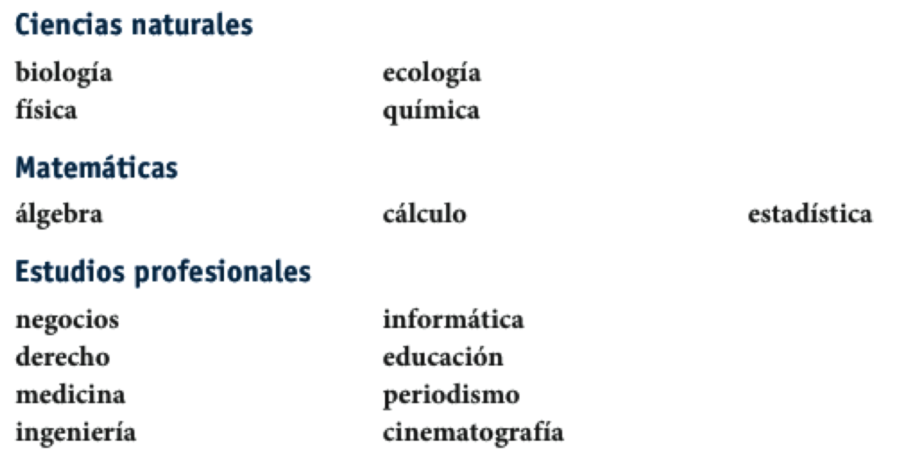
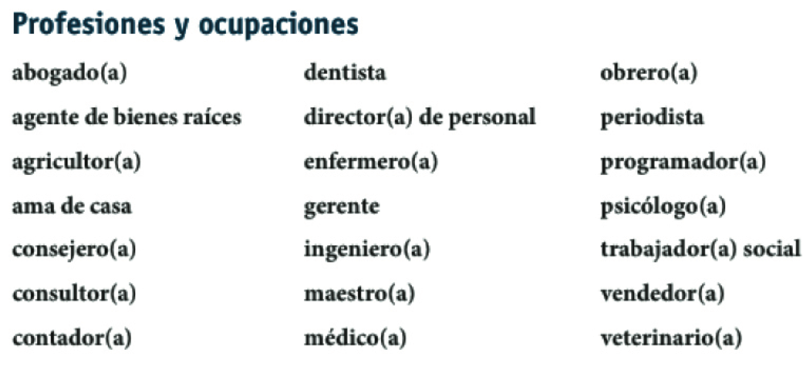
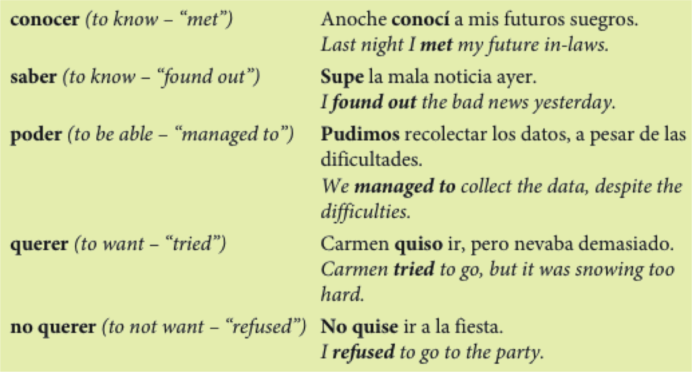
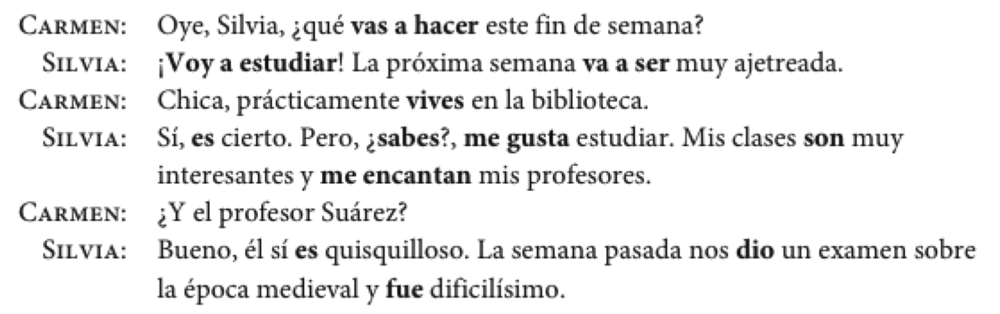
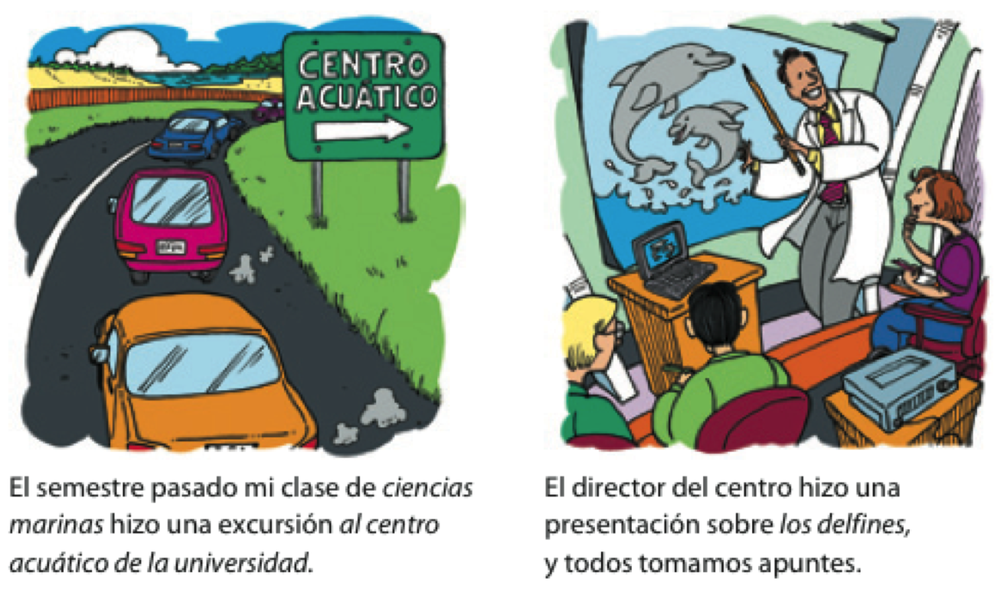
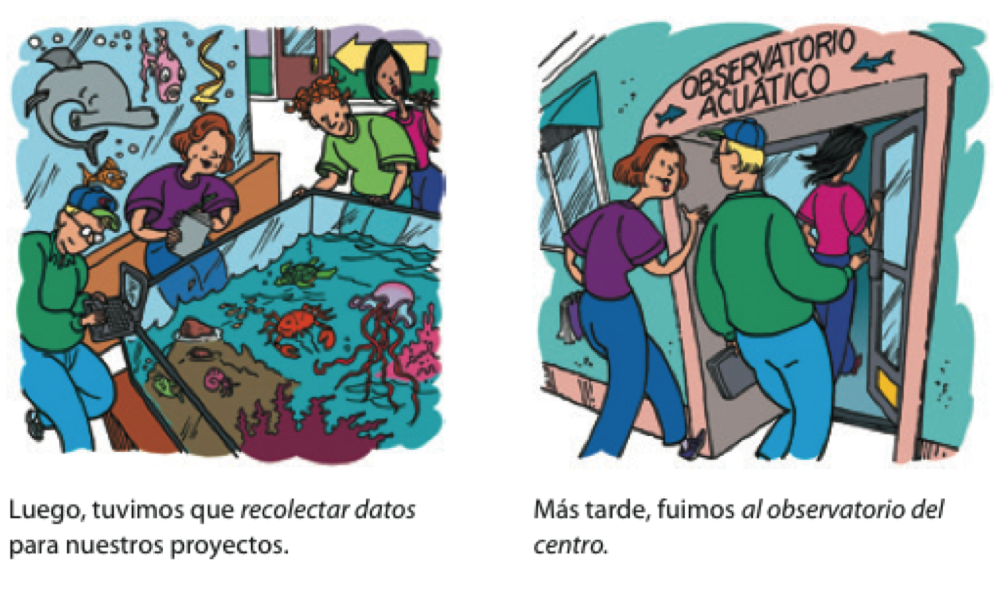
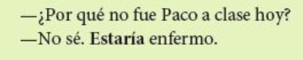

Español 1.5
Capítulo 5
Joseph V. Casillas
Middlebury College: Verano 2015
El plan

Vocabulario
- El horario
- Pedir y dar opiniones
- Las profesiones
Gramática
- El presente perfecto
- Encantar, interesar
- Estrategias para hablar del futuro
Como preparar una presentación con elementos visuales
El participio pasado (repaso)
- quitar la terminación
- hablar > habl
- comer > com
- dormir > dorm
- añadir -ado/-ido
- habl + ado = hablado
- com + ido = comido
- dorm + ido = dormido
El participio pasado (repaso)
Ojo:
- ¡No te confundas con el gerundio!
- Hay formas irregulares
hacer = hechoescribir = escritoabrir = abiertodecir = dichoponer = puestomorir = muertoromper = rotover = vistovolver = vuelto
¡Cálmate!
Tu amiga Sofía va a montar una fiesta para su novio. Ella está un poco preocupada con los preparativos y tú tienes que calmarla. Con un(a) compañero(a) de clase, seguid el modelo y completad los diálogos. ¡Ojo! Hay que usar participios pasados en las respuestas.
- Sofía: ¿Quién va a decorar el pastel?
- Tú: ¡No te preocupes! El pastel ya está decorado.
¡Cálmate!
Sofía: ¿Quién va a decorar el pastel?
Tú: ¡No te preocupes! El pastel ya está decorado.
- ¿Por qué no preparamos los sándwiches ahora?
- ¿Quién va a poner la mesa?
- Ahora tenemos que hacer las camas.
- ¿Cuándo vamos a envolver los regalos?
- Debemos abrir las ventanas; hace calor hoy.
- ¿Hay más platos sucios? Tenemos que lavarlos antes de que lleguen los invitados.
¿Notáis algo diferente?
Diego: ¿Has comprado el vino para la fiesta?
Ada: Sí, y también he preparado las tapas.
Diego: Y el postre, ¿has hecho algún postre especial?
Ada: Sí, he preparado una torta de chocolate.
Diego: Gracias, mi amor. Me encanta la torta de chocolate.
El presente perfecto
Sirve para indicar cosas que han pasado y siguen siendo relevantes en el presente.
- ¿Has comprado el vino para la fiesta?
- Sí, y también he preparado las tapas.
- ¿Qué han hecho ustedes hoy?
- Hemos trabajado mucho
El verbo haber
| Singular | Plural | |
|---|---|---|
| 1a | yo he trabajado | nosotros hemos dormido |
| 2a | tú has comido | vosotros habéis dormido |
| 3a | él/ella/usted ha visto | ellos/ellas/ustedes han hecho |
haber + participio pasado = el presente perfecto
¡OJO! ¡No se pronuncia la "h"!
¡Recordad! Algunos verbos son irregulares.
¿Qué habéis hecho hoy? ¿Esta semana? ¿Este verano? ¿Este año?
Nunca he hecho...
- Empiezas con 5 puntos
- Tienes que formar una frase usando el presente perfecto
- Si los miembros de tu grupo han hecho lo que propones en tu frase, pierden puntos.
- El objetivo es de NO PERDER PUNTOS
- El último que se quede con puntos es el ganador
Ej.
- Nunca he sacado una F en un examen.
Descanso (10 minutos)

¿Qué pasa?
¿Qué pasa?

- Bradford le da una manzana a Lisa.
- Se la da.
¿Qué pasa?

- Jing le da uvas a Kim.
- Se las da.
¿Qué pasa?

- El niño le va a regalar una sorpresa a la niña.
- Se la va a regalar.
- Va a regalársela.
¿Qué pasa?

¿Qué pasa?

Jeopardy
Los horarios

Las carreras

Las carreras


Cómo pedir y dar opiniones sobre las clases

Los profesores y las notas


Dos verbos como gustar: interesar y encantar
A Sara le gusta la clase de inglés.
Me encanta la clase de biología.
Nos interesan las ciencias.
| Singular | Plural | |
|---|---|---|
| 1a | me encanta(n) / me interesa(n) | nos encanta(n) / nos interesa(n) |
| 2a | te encanta(n) / te interesa(n) | os encanta(n) / os interesa(n) |
| 3a | le encanta(n) / le interesa(n) | les encanta(n) / les interesa(n) |
Ejercicio
- 5-8, p. 164
Como preparar una presentación con elementos visuales
- Con un compañero, haz una lista de los elementos necesarios para hacer una buena presentación
- Haz otra lista de las cosas que no te gusten en una presentación
- ¿Qué sugerencias tenéis para mejorar las presentaciones orales?
- ¿Es necesario utilizar elementos visuales? ¿Por qué?
- ¿Cómo deben usarse?
Repaso
Repaso
Vocabulario
- El horario
- Pedir y dar opiniones
- Las profesiones
Gramática
- El presente perfecto
- Encantar, interesar
- Estrategias para hablar dell futuro
Como preparar una presentación con elementos visuales
Tarea
Dos verbos como gustar: interesar y encantar
A Sara le gusta la clase de inglés.
Me encanta la clase de biología.
Nos interesan las ciencias.
| Singular | Plural | |
|---|---|---|
| 1a | me encanta(n) / me interesa(n) | nos encanta(n) / nos interesa(n) |
| 2a | te encanta(n) / te interesa(n) | os encanta(n) / os interesa(n) |
| 3a | le encanta(n) / le interesa(n) | les encanta(n) / les interesa(n) |
Con un compañero...
¿Qué has hecho hoy/esta semana/este mes/este año?
4 oraciones, podéis mentir
El plan
- Vocabulario:
- Hablar del futuro
- Hablar del pasado
- Gramática:
- Pretérito
Los planes para el futuro

Las profesiones y las ocupaciones

Estrategias para hablar del futuro

- 5-13, p. 167
¿Qué hiciste ayer?: el pasado

¿Qué hiciste ayer?: el pasado

¿Qué hiciste ayer?: el pasado

El pretérito expresa el pasado con una referencia a un tiempo particular
Salí con unos compañeros de clase anoche.
Ayer fuimos a Dos Hermanos.
La semana pasada corrimos dos millas.
Me bañé en el mar el año pasado.
El pretérito
| tomar | volver | salir | |
|---|---|---|---|
| yo | tomé | volví | salí |
| tú | tomaste | volviste | saliste |
| Ud./él/ella | tomó | volvió | salió |
| nosotros(as) | tomamos | volvimos | salimos |
| vosotros(as) | tomasteis | volvisteis | salisteis |
| Uds./ellos/ellas | tomaron | volvieron | salieron |
¡OJO!
Los verbos reflexivos requieren el pronombre reflexivo.
- Me desperté a las ocho ayer.
El verbo gustar solo usa dos formas en el pretérito.
- Me gustó el concierto. No me gustaron esas dos películas.
Cambios ortográficos en la forma yo
- -car (buscar, tocar, sacar)
- c > qu
- toqué, tocaste, tocó, tocamos, tocasteis, tocaron
- -gar (llegar, jugar, pagar)
- g > gu
- llegué, llegaste, llegó, llegamos, llegasteis, llegaron
- -zar (empezar, almorzar)
- z > c
- empecé, empezaste, empezó, empezamos, empezasteis, empezaron
Ejercicios
- 5-19, p. 172*
- 5-20, p. 172*
Los verbos de –er y –ir con una vocal: Leer, creer y caerse
- Leer
- leí, leíste, leyó, leímos, leísteis, leyeron
- Creer
- creí, creíste, creyó, creímos, creísteis, creyeron
- Caerse
- me caí, te caíste, se cayó, nos caímos, os caísteis, se cayeron
Verbos con cambios en la raíz en el pretérito:
e > i; o > u
| e > i | o > u | |
|---|---|---|
| divertirse | dormir | |
| yo | me divertí | dormí |
| tú | te divertiste | dormiste |
| Ud./él/ella | se divirtieron | durmió |
| nosotros(as) | nos divertimos | dormimos |
| vosotros(as) | os divertisteis | dormisteis |
| Uds./ellos/ellas | se divirtieron | durmieron |
- ¡OJO!: Estos cambios sólo ocurren en la segunda y tercera persona (Ud., él, ella y Uds., ellos, ellas)
Prueba - CD/CI
- Voy a buscar a mi perro.
- Te doy las respuestas.
- Nos cuentas muchos chistes.
- Pedro le dice la verdad a su madre.
- La madre le pone las chanclas a su hijo.
- Juan me va a regalar dos gatos.
- Voy a buscarlo/Lo voy a buscar
- Te las doy
- Nos los cuentas
- Se la dice
- Se las pone
- Me los va a ragalar/Va a regalármelos
Repaso - semana 3
Gramática
- El participio pasado
- El complemento directo
- El complemento indirecto
- El presente perfecto
- Verbos como gustar (encantar/interesar)
- Cómo hablar del futuro (usando el presente)
- El pretérito
Vocabulario
- Las comidas
- El mercado
- El horario
- Pedir y dar opiniones
- Las profesiones
El plan
- Vocabulario
- hablar del pasado
- Gramática
- el pretérito
El pretérito expresa un momento particular en el pasado.
Palabras importantes: ayer, anoche, la semana pasada
- Anoche miramos la televisión.
- Mi abuela me visitó hace dos semanas.
El pretérito expresa un evento que ocurrió varias veces
Palabras importantes: una vez, dos veces, varias veces
- Fuimos a la piscina dos veces la semana pasada.
El pretérito expresa cuánto tiempo duró un evento.
Palabras importantes: por veinte minutos, por dos días
- Arturo habló por teléfono por quince minutos.
El pretérito resume una experiencia (al principio o al final de una historia)
- Ayer fue un día fantástico en la uni. Primero...
Descanso (10 minutos)
Ejercicios
- 5-21, p. 174
- 5-23, p. 175
Los verbos irregulares en el pretérito:
| ir | ser | dar | ver | |
|---|---|---|---|---|
| yo | fui | fui | di | vi |
| tú | fuiste | fuiste | diste | viste |
| Ud./él/ella | fue | fue | dio | vio |
| nosotros(as) | fuimos | fuimos | dimos | vimos |
| vosotros(as) | fuisteis | fuisteis | disteis | visteis |
| Uds./ellos/ellas | fueron | fueron | dieron | vieron |
Los verbos irregulares en el pretérito: los verbos con u en la raíz
| estar | poder | poner | saber | tener |
|---|---|---|---|---|
| estuve | pude | puse | supe | tuve |
| estuviste | pudiste | pusiste | supiste | tuviste |
| estuvo | pudo | puso | supo | tuvo |
| estuvimos | pudimos | pusimos | supimos | tuvimos |
| estuvisteis | pudisteis | pusisteis | supisteis | tuvisteis |
| estuvieron | pudieron | pusieron | supieron | tuvieron |
Los verbos irregulares en el pretérito: los verbos con i en la raíz
| hacer | querer | venir |
|---|---|---|
| hice | quise | vine |
| hiciste | quisiste | viniste |
| hizo | quiso | vino |
| hicimos | quisimos | vinimos |
| hicisteis | quisisteis | vinisteis |
| hicieron | quisieron | vinieron |
Los verbos irregulares en el pretérito: los verbos con j en la raíz
| conducir | decir | traer |
|---|---|---|
| conduje | dije | traje |
| condujiste | dijiste | trajiste |
| condujo | dijo | trajo |
| condujimos | dijimos | trajimos |
| condujisteis | dijisteis | trajisteis |
| condujeron | dijeron | trajeron |
¿Qué pasó?
Estrategias para aprender vocabulario
- ¿Cómo sueles aprender vocabulario nuevo? ¿En qué situaciones? ¿Con quién sueles estar?
- ¿Qué haces para recordar el vocabulario nuevo que aprendes?
- ¿Qué sugerencias tienes para aprender y memorizar vocabulario nuevo (haz una lista)?
- ¿Cómo puedes mejorar tu estrategias?
Prueba - Pretérito y CD/CI (2)
Escoged un verbo (-ar, -er, -ir) y conjugadlo en el pretérito (todas las formas). Luego reescribid las siguientes oraciones usando pronombres de CD/CI.
- Joseph quiere a Maya.
- Nos dan la información.
- Os escribo una carta.
- Les vamos a contar muchas mentiras.
- La quiere
- Nos la dan
- Os la escribo
- Se las vamos a contar/Vamos a contárselas
El plan
- Vocabulario:
- Excursiones académicas
- Gramática:
- Pretérito irregular
- Resumen de tiempos verbales
- El condicional
El pretérito (irregulares)
- tener
- estar
- ir
- ser
- poner
- poder
- traer
- hacer
- haber
- saber
- querer
- decir
- venir
- ver
- dar
El pretérito (irregulares)
El pretérito (irregulares)

traje es para
sin acentos
Hay verbos con significados particulares en el pretérito.

Resumen - los tiempos verbales
Las conversaciones normalmente incluyen el presente, el pasado y el futuro.

Resumen - los tiempos verbales
El futuro puede expresarse con verbos en el tiempo presente.
- Ir + a + infinitivo
- Voy a estudiar este fin de semana.
- Expresiones del futuro
- La próxima semana
- el año que viene
- Otros verbos que expresan el futuro
- Pienso vivir en la residencia el próximo semestre.
- Espero trabajar en un banco en el futuro.
Ejercicio
- 5-13, p. 167
Resumen - los tiempos verbales
El tiempo presente expresa las costumbres de la vida diaria.
- Palabras importantes:
- todos los días, frecuentemente, a menudo, a veces
- Todos los días estudio por dos o tres horas.
Resumen - los tiempos verbales
En este capítulo, se usa el pretérito para expresar el pasado.
- UNA acción o evento que ocurrió UNA vez.
- una SERIE de acciones en el pasado.
- una acción que DURÓ un tiempo específico.
- UN EVENTO ESPECÍFICO en el pasado.
Palabras asociadas al pretérito:
- ayer, la semana pasada, el año pasado, primero, luego
- antes de/después de + infinitivo, por último
Ahora, identifiquen los tiempos verbales en esta conversación:
Descanso (10 minutos)
Ejercicios
- 5-31, p. 180
- 5-35, p. 183
Cómo hablar de excursiones académicas

Cómo hablar de excursiones académicas

Cómo hablar de excursiones académicas

Con un compañero
- Describe una excursión que has hecho en el pasado
- Menciona...
- adónde fuiste
- qué hiciste
- por qué fuiste
- y cualquier otra cosa relevante
- 5-25, p. 177
Ejercicio
- 5-35, p. 183
El condicional (p. 343)
- La forma condicional se utiliza para hablar de acciones hipotéticas o posibles
- Leed el siguiente párrafo e identificad los verbos en la forma condicional

El condicional (p. 343)
- La forma condicional describe lo que las personas harían o podrían hacer bajo ciertas circunstancias

El condicional (p. 343)
- La forma condicional se usa para indicar cortesía, sobre todo con los verbos gustar, poder y deber.

El condicional (p. 343)
- La forma condicional se usa para indicar probabilidad o duda en el pasado

El condicional (p. 343)
| forma | terminación | llegar | volver | vivir |
|---|---|---|---|---|
| yo | ía | llegaría | volvería | viviría |
| tú | ías | llegarías | volverías | vivirías |
| usted/él/ella | ía | llegaría | volvería | viviría |
| nosotros | íamos | llegaríamos | volveríamos | viviríamos |
| vosotros | íais | llegaríais | volveríais | viviríais |
| uds./ellos/ellas | ían | llegarían | volverían | vivirían |
Formas irregulares
| Verbo | raíz irregular | Ejemplos |
|---|---|---|
| decir | dir- | Yo diría |
| hacer | har- | Tú harías |
| tener | tendr- | Nosotros tendríamos |
| poner | pondr- | Vosotros pondríais |
| venir | vendr- | Usteden vendrían |
| salir | saldr- | Yo saldría |
| saber | sabr- | Tú sabrás |
| querer | querr- | Ella querría |
| poder | podr- | Él podría |
Ejercicio
- GS5-1, p. 344
- GS5-3, p. 345